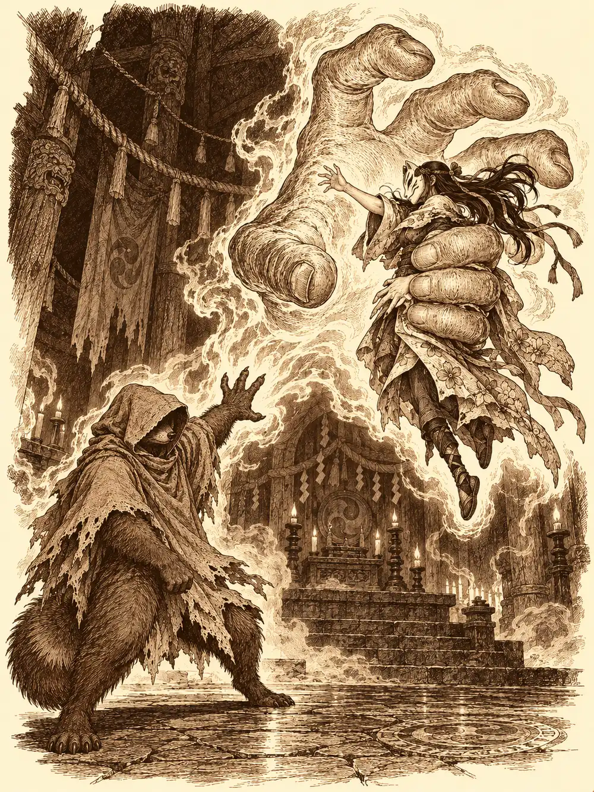

Capítulo 164
El último templo cultista
Libro X · Hasta pronto, Kuroto
La máquina del puerto ya funcionaba, y Guxi había descubierto que supervisar mercancías para el shogunato consistía sobre todo en pagar de su bolsillo las piezas que el shogunato no le mandaba. Por eso, cuando Kurobane apareció en la base con noticias, no se hizo de rogar. Ikari tampoco. El tanuki llevaba semanas detrás de la barra de su taberna, rodeado de primos, sobrinos y crías que le tiraban de la cola, y en cuanto oyó la palabra cultistas se le iluminó la cara como si le hubieran ofrecido unas vacaciones.
"Danifae me ha dicho que hay un templo muy cerca de aquí", explicó el ninja. "De los que quedan, quizá el último. Deberíamos acabar con ellos antes de la siguiente oleada".
"¿Y te fías de su información?".
"Ahora que es amiga de Banzo, posiblemente sea buena".
Mientras lo decía, se miró de reojo la mano derecha, cubierta por un guante, donde uno de los dedos abultaba más de la cuenta. Luego volvió a mirarlos como si nada.
La drow los esperaba en la calle, frente a un edificio de piedra con columnas, ventanillas y gente haciendo cola. Una Casa de Inversiones. Allí, dijo, era donde los cultistas lavaban su dinero. Lo había seguido moneda a moneda, ingresos que salían de la capital y del propio shogunato. Tenía la palabra de Tiari, la jefa de las Cuchillas Negras.
"Eso no es una prueba que podamos enseñar", dijo Guxi.
"Pues habrá que buscarla".
Ikari los hizo invisibles en un callejón. Danifae los veía igual, y nadie le preguntó cómo. Acordaron entrar sin derramar sangre: aunque hubiera culpables dentro, la mayoría serían empleados que no sabían nada. Dentro olía a tinta, a cera y a monedas. Había mujeres en la recepción, clientes esperando turno y dos guardias en la puerta con uniformes que no eran del shogunato. Nada en las paredes delataba al culto. No eran tan tontos.
Guxi conocía edificios como aquel y fue derecho a buscar la contabilidad. Ikari se quedó vigilando las dos salidas a la vez. Kurobane se coló por una puerta que alguien abrió en el momento justo y subió con Danifae hacia la cámara acorazada, escuchando a través de las paredes: voces lejanas, nada más.
En una oficina, entre montones de libros de cuentas, Guxi encontró algo que no encajaba. Un número. No era una cantidad ni una fecha, y se repetía en documentos que no tenían nada que ver entre sí, como una contraseña garabateada en el margen de todas partes. Se lo susurró al ninja, y Kurobane recordó haber visto ese mismo número grabado en una caja fuerte del piso de arriba.
Cuando volvió a buscar a la drow, la encontró a dos pasos de una archivista, con la mano demasiado cerca del cinto.
"Ni se te ocurra".
Lo coordinaron entre los cuatro. Había tres empleados en la sala de la caja. Los dejarían inconscientes a la vez, sin matarlos. Kurobane con la empuñadura de la espada, Guxi con la culata de su pistola nueva, Danifae como ella supiera. Los tres cayeron al mismo tiempo, y la invisibilidad se les deshizo a todos. Los ataron, los amordazaron y comprobaron que respiraban.
La caja fuerte era un cubo de acero del tamaño de un armario, sin cerradura, solo con unas ruedas pequeñas de números. Marcaron el número que había encontrado Guxi. La puerta se abrió y detrás, en lugar de oro, había unas escaleras estrechas que bajaban.
El aire se volvió húmedo a cada peldaño. Olía a encierro, a piedra mojada, a algo dulce y podrido. Al fondo había una puerta grande con el símbolo de los cultistas grabado en el centro.
"Esto estaba debajo de nuestras narices", murmuró Guxi. "Y seguro que los trabajadores de arriba ni lo saben".
El subsuelo era un laberinto de puertas dobles, todas iguales, todas con el mismo símbolo. Kurobane se dio la vuelta, pero su sombra se quedó quieta en el suelo; la levantó con un gesto y la sombra se convirtió en una copia de sí mismo, de pie a su lado.
"Hola. Soy yo".
Mandó al eco a escuchar una puerta mientras él escuchaba otra, y saltaba de un cuerpo al otro cuando le convenía. Detrás de una oyó gemidos, tres voces distintas. Detrás de otra, ronquidos. Abrió esa con cuidado, vio a dos figuras dormidas y entró a acabar con ellas. Pisó mal. Los dos cultistas despertaron, y Kurobane los mató antes de que pudieran gritar.
En las otras salas encontraron a los prisioneros. Una geisha con la cara amoratada. Un hombre en los huesos, encadenado a la pared. Un samurái hambriento, con las muñecas en carne viva. Y más, en otra celda, apiñados en la oscuridad. Los miraron con terror hasta que les enseñaron el collar de cazador. Entonces algunos lloraron.
"Os sacaremos", les prometieron. "Pero todavía no. Quedaos aquí y no hagáis ruido, que aún no está seguro".
El ruido lo hicieron otros. Por los pasillos llegaron cultistas, criaturas que habían sido personas y un guardián que exhalaba un aliento helado que escarchaba las paredes. Ikari lanzaba magia y soltó a su perro de sombra, que mordía tobillos en la oscuridad. Guxi plantaba torretas que les cubrían la espalda. Kurobane aparecía y desaparecía entre su cuerpo y su eco, golpeando siempre desde donde no lo esperaban, y Danifae hacía restallar el látigo de serpientes. En una de las salas había una pila de piedra cubierta de símbolos que reconocieron: nombres y marcas de demonios contra los que ya habían peleado. Aquello era un templo, sin duda. Para qué servía exactamente, no lo sabían.
La puerta central estaba cerrada con llave. Kurobane rebuscó en sus bolsillos y no encontró herramientas.
"Toma, chico", dijo Danifae, y le tendió las suyas. "Tienes que prepararte mejor para las misiones".
La cerradura cedió. Al otro lado los estaban esperando.
Tres rayos atravesaron la puerta antes de que nadie pudiera reaccionar. Kurobane recibió el primero y se retorció entre chispas. La sala era grande y oscura, y en el centro, junto a un altar, había una mujer con una máscara. Sakura, la llamaban los suyos. Levantó la mano y una oleada de energía necrótica destrozó una de las torretas de Guxi. Luego la sala se llenó de miasma, de una niebla verdosa que paralizaba los músculos y quemaba la garganta.

Kurobane se quedó rígido en el umbral. Ikari aturdió a varios enemigos y rompió con su magia la parálisis del ninja, pero Sakura respondió levantando una nube de veneno que cubrió la entrada. Los cuatro estaban atrapados en un cuello de botella: delante, la sala llena de enemigos; detrás, el pasillo. La oscuridad que el ninja usaba para esconderse impedía también que los demás lo vieran para ayudarle.
La sacerdotisa apuntó a Guxi con un dedo y un rayo verde le atravesó el pecho. Era una magia que deshacía la carne. Guxi cayó de rodillas, humeando, pero siguió vivo. Kurobane se lanzó hacia delante con sus copias y recibió tanto castigo que estuvo a un pelo de caer, y tuvo que retirarse con la piel abierta. Danifae atrapó a dos cultistas con el látigo y los arrastró hacia el pasillo.
Ikari conjuró una mano enorme, hecha de magia, y la mano atravesó la sala y agarró a Sakura por la cintura. La sacerdotisa no luchó contra ella. Miró al tanuki y pronunció una sola palabra, y Ikari se desplomó como un muñeco al que le hubieran cortado los hilos. La mano se desvaneció.
Guxi se levantó del suelo, apuntó con la pistola y disparó. Sakura cayó junto a su altar.
Aquello no terminó ahí. Ikari siguió en el suelo, incapaz de moverse, como si la orden de la sacerdotisa le hubiera quedado dentro. La sala seguía dañando a quien la pisaba y llegaban más enemigos por las otras puertas. Guxi reconstruyó una torreta y siguió disparando. Danifae fue limpiando criaturas con la espada. Al cabo de un rato, Ikari consiguió sacudirse aquella palabra de encima, se levantó y empezó a lanzar heridas necróticas a los que quedaban. Kurobane, todavía sangrando, remató al último.
Se quedaron un rato sin hablar, apoyados en las paredes. Estaban vivos y muy castigados.
Buscaron en el altar. Era un altar de rituales, de eso no había duda, pero no entendieron qué hacía ni para qué lo usaban. Registraron el cuerpo de Sakura. Ikari le encontró en los bolsillos una poción de curación y poco más. Kurobane revolvió la túnica y la máscara sin suerte. Le pidieron a Danifae que mirara ella.
La drow se agachó sobre el cadáver. Encontró algo. Lo supieron porque sus manos se movieron demasiado deprisa para seguirlas con la vista, y cuando se levantó no había nada en ellas.
"¿No queréis llevarle la cabeza de la cultista a la shogun? A lo mejor le gusta".
Sonreía.
"No", le contestaron. "Con que informemos, bastará".
"Una pena".
Volvieron a las celdas. Rompieron cadenas, levantaron en brazos al que no podía andar y subieron a todos por las escaleras estrechas hasta la sala de la caja fuerte, donde los tres empleados seguían atados y amordazados. Luego avisaron a los guardias y al shogunato de lo que había debajo de la Casa de Inversiones. La pregunta de qué se había guardado Danifae en la manga se quedó para otro día.
No tardó en saberse una parte. Unos días después, Kurobane recorría Sho buscando a la drow cuando una mano lo arrastró a un callejón y las serpientes de un látigo se le enroscaron alrededor como una jaula. Kurobane le preguntó si había encontrado algo más bajo el banco. Discutieron sobre quién había conseguido la información y quién había descubierto el pasillo, hasta que ella fue al grano: cualquier documento adicional tenía un precio. Ya tenía compradora. Y antes de decir qué quería, tanteó el terreno con las esferas de gran poder.
"¿Las quieres para ti o te las han encargado?".
Danifae no contestó. Dijo que se había ofrecido a marcharse de Kuroto a cambio de ellas y, por fin, concretó: quería saber dónde las escondía Calista. A cambio le daría unos documentos del cadáver de la líder cultista, quizá importantes para detener a Otakemaru. Kurobane le recordó el riesgo de investigar a espaldas de la shogun y de su consorte, pero aceptó. Le avisaría si encontraba el lugar. Necesitaría tiempo.
"Date prisa", le dijo ella. "Ahora que ya no tienes a Osuray, a ver de qué eres capaz tú solo".
El ninja se marchó hacia palacio con la mandíbula apretada.
Gelbreak, entretanto, había traído a Archi a Sho para sacarle información. El gnomo decía que su familia sabía fabricar unas armaduras extraordinarias, y el drow quería esas armaduras para la guerra. Archi prometía hospitalidad, pero cada vez que le preguntaban por qué tenían que entrar en Conosur a escondidas cambiaba de tema. En privado temía que volver los pusiera en peligro a todos.
Guxi, Kazuki y Serafina se sumaron a la conversación. Gelbreak quería que el viaje fuera un secreto para Calista: no pensaba exponer a la shogun en un continente en guerra. Guxi y Serafina no veían de qué servía ocultárselo, y él les contestó con una dureza que olía a reproche personal. Archi propuso un camino: un estibador contrabandista y un viejo alcantarillado que salía al mar, lejos de las rutas de montaña y del cielo vigilado. Kazuki se haría pasar por fauno para convencer al contacto; Guxi, por mercader, con Serafina como acompañante. Entre bromas y advertencias, la tapadera fue degenerando hasta convertir a Guxi en un traficante y a Serafina y Kazuki en sus dos esclavas. Gelbreak fijó la entrada por el lado este y exigió que Archi no se le despegara.
Unos días más tarde, el gnomo le propuso a Banzo que se uniera. Mientras hablaban, Archi trabajaba en su armadura con un polvo brillante que había rascado de unos cristales mágicos de transporte, sin decir para qué. Banzo tendría que pasar por otra persona y taparse los tatuajes. El goliat aceptó y preguntó por un mapa del que ya habían hablado. Archi le pidió que lo guardara bien, que algún día le haría falta.